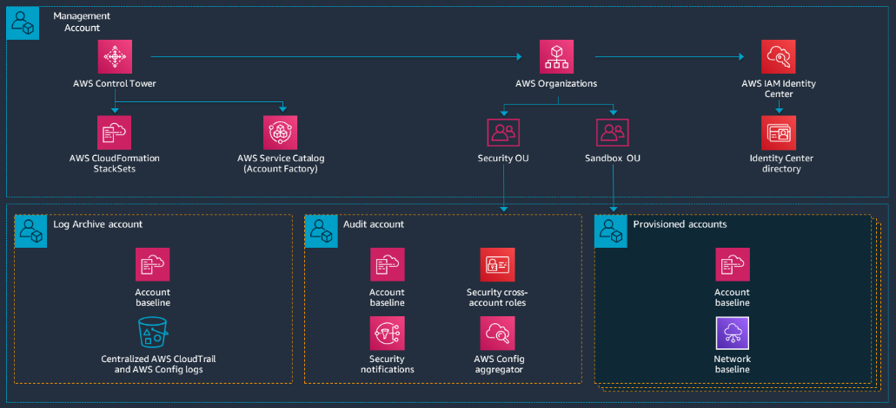
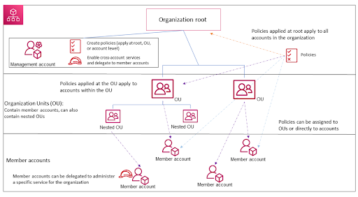
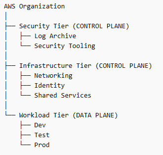
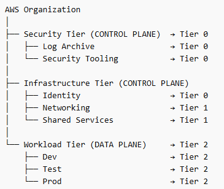
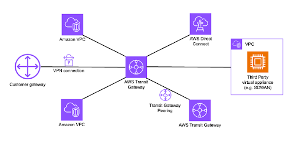

AWS: A Well-Architected Landing Zone
Introduction
AWS is often one of the top choices as features are managed which means that security patches, backups and high availability are managed by AWS and benefit from their expertise.
Each point in this document should receive special attention regarding security.
I. Governance
A landing zone is a well-architected, multi-account AWS environment. This is a starting point from which your organization can deploy workloads. Each account fulfills a business need and has a functional relation with another account of the landing zone.
The first AWS service that enables building governance in a multi-account environment is Control Tower. Control Tower orchestrates the use of multiple AWS services such as AWS Organizations, AWS Service Catalog and AWS IAM Identity Center, to have a well governed Landing Zone.
A Landing Zone should have the following features:
- A multi-account environment where company resources are regrouped in containers such as Organizational Units (OU).
- Controls that provide the ongoing governance for your overall AWS environment.
- An account factory that permits the creation and enrollment of new accounts in the AWS's company environment.
- A continuous supervision of the company's Landing Zone such as a dashboard.
Let's define services used by Control Tower:
- AWS Organizations: This service enables the organization of your company's resources into clearly defined containers.
- AWS Service Catalog: This service can be used to create new secured services in the organization such as an account factory that uses AWS APIs and a custom logic through CloudFormation StackSets. CloudFormation capabilities will be explained in the Workload security and hardening section.
- AWS IAM Identity Center: This service allows to federate an external users directory such as Microsoft EntraID. It will be explained in detail in the Identity and Access section.
However, the use of Control Tower is completely optional, a custom Landing Zone can be created from the start following the mentioned guidelines.

As seen above, the concept of Management account, Log Archive and Audit accounts appeared. A focus needs to be done on AWS Organizations in order to understand finely the core of the Landing Zone.
AWS Organizations
An organization is a collection of AWS accounts that you can manage centrally and organize into a hierarchical, tree-like structure with a root at the top and organizational units nested under the root. Each account can be directly in the root, or placed in one of the OUs in the hierarchy.
Each organization consists of:
- A management account
- Zero or more member accounts
- Zero or more organizational units (OUs)
- Zero or more policies.
AWS accounts are stored in containers called Organizational Units (OUs). Policies can be applied on OUs.

Each organization contains an administrative root in the Management account and is the starting point of the organization. The root is the top-most container in your organization's hierarchy. Under this root, you can create organizational units (OUs) to logically group your accounts and organize these OUs into a hierarchy.
If you apply a management policy to the root, it applies to all organizational units (OUs) and accounts, including the management account for the organization.
If you apply an authorization policy such as an SCP, to the root, it applies to all organizational units and member accounts in the organization. It does not apply to the management account in the organization.
The administration of certain services can be delegated to a member account in order to separate functional needs.
The Management account is also called the Organization account as it bears all the organization. The list below describes the actions it can do:
- Create other accounts in your organization
- Invite and manage invitations for other accounts to join your organization
- Designate delegated administrator accounts
- Remove accounts from your organization
- Attach policies to entities such as roots, organizational units (OUs), or accounts within your organization
- Enable integration with supported AWS services to provide service functionality across all of the accounts in the organization.
Financial considerations: The management account is the ultimate owner of the organization, having final control over security, infrastructure, and finance policies. This account has the role of a payer account and is responsible for paying all charges accrued by the accounts in its organization.
- You cannot change which account in your organization is the management account.
- The management account does not have to be directly under the root, it can be placed anywhere in the organization.
From the organization's management account, you can designate one or more member accounts as a delegated administrator. There are two types of delegated administrators:
- Delegated administrator for Organizations: From these accounts, you can manage organization policies and attach policies to entities (roots, OUs, or accounts) within the organization.
- Delegated administrator for an AWS service: From these accounts, you can manage AWS services that integrate with Organizations.
It is recommended to use the Management account and its users and roles only for tasks that must be performed by this account. This is because security features like service control policies (SCPs) do not restrict any users or roles in the management account. In a practical case, If the Management account is used for another purpose and the security of one of the underlying components is weak, an attacker could take over an identity in this account and escape policies. That's why delegated administrators should be used to administrate services other than Organizations and not to use the Management account to administrate other services.
Tagging policies
A mean to identify the scope of a resource is called Tags. Tags are custom attribute labels that you assign or that AWS assigns to AWS resources. Each tag has two parts: a key and a value (optional).
Tag policies help standardize and enforce tag's naming convention by applying rules known as tag policies. Tag policies are a type of policy that can help you standardize tags across resources in your organization's accounts. In a tag policy, you specify tagging rules applicable to resources when they are tagged.
Using tag policies involves working with multiple AWS services:
- Use AWS Organizations to manage tag policies. When you sign in to the organization's management account, you use Organizations to enable the tag policies feature. Then you can create tag policies and attach them to the organization entities to put those tagging rules in effect.
- Use AWS Resource Groups to manage compliance with tag policies. When you sign in to an account in your organization, you use Resource Groups to find noncompliant tags on resources in the account. You can correct noncompliant tags in the AWS service where you created the resource.
Tags primarily serve the purpose to organize resources, but can be used for cost allocation in AWS Cost Explorer, can be used in IAM policies to identify resources, can be used for automation of backups and AWS Lambda functions, and in Organizations to apply policies.
Service Control Policies (SCP)
Service control policies (SCPs) are a type of organization policy that you can use to manage permissions in your organization. SCPs affect only IAM users and roles of accounts of the organization. They also don't affect users or roles from accounts outside the organization.
SCPs affect only member accounts in the organization. They have no effect on users or roles in the management account. This also means that SCPs apply to member accounts that are designated as delegated administrators.
An SCP restricts permissions for IAM users and roles in member accounts, including the member account's root user.
SCPs apply vertically, meaning a permission will only be allowed if every parent OUs permit it as well. This vertical scheme is also applied for denied permissions.
The following SCPs are usually applied:
- A policy to block actions when a user attempts to leave the organization (aws:LeaveOrganization), ensuring that member accounts cannot exit the organization without administrative approval.
- A policy to restrict the disabling or modification of centralized logging services such as AWS CloudTrail, preventing users from turning off audit logging.
- A policy to prevent deletion or modification of log storage in Amazon S3 buckets used for centralized logging.
- A policy to restrict changes to security monitoring services like Amazon GuardDuty or AWS Security Hub.
- A policy to prevent disabling configuration monitoring in AWS Config.
- A policy to block certain regions or restrict resource creation to approved regions only.
The following reference can be used to fine tune SCPs: aws-samples/service-control-policy-examples: Example AWS Service control policies to get started or mature your usage of AWS SCPs.
Resource Control Policies (RCP)
A Resource Control Policy (RCP) is a policy that permits to control which actions can be done on a specific resource.
RCPs only apply to resources. However, only a few AWS services support them:
- Amazon S3
- AWS Security Token Service
- AWS Key Management Service
- Amazon SQS
- AWS Secrets Manager
- Amazon Cognito
- Amazon CloudWatch Logs
- Amazon DynamoDB
- Amazon Elastic Container Registry
- Amazon OpenSearch Serverless
RCPs apply vertically like SCPs and it is also strongly advised to test them before applying them to the root of the organization.
The following RCPs are usually applied:
- Log protection (CloudTrail and S3)
- Cryptographic key protection (AWS KMS)
- Security configuration protection (AWS Config, Guard Duty, Security Hub)
- Backup protection (AWS Backup)
- Shared network-related infrastructure protection (VPC, AWS RAM)
Management policies
Management policies are policies that can be implemented at the service-level for the entire organization in order to configure the Landing Zone or to apply standards to the Landing Zone.
For example, tag policies are a type of management policies.
A lot of different ones exist such as:
- Backup policies
- Tag policies
- Chat applications policies
- AI services opt-out policies
- Security Hub policies
- Amazon Bedrock policies
- Amazon Inspector policies
- Upgrade rollout policies
- Amazon S3 policies
- AWS Shield Network Security Director policies
Break-glass root users
In enterprise environments, the root user of the management account typically acts as the primary break-glass for administering the entire organization, while the root users of member accounts can only manage their own account or resources within their OU.
The management account root user can assume administrative roles (AssumeRole) in any member account and most importantly in the management account, ensuring that full organizational control can be recovered in emergency situations, such as IAM role failures or SSO outages.
To protect this critical access, root credentials of the management account are stored in a secure vault, MFA with a physical token is enforced, and passwords and tokens are rotated periodically.
Additionally, emergency roles are defined in critical member accounts:
- SSO account
- Logging account (CloudTrail, CloudWatch)
- Security account (GuardDuty, Security Hub, Config)
- Shared infrastructure/network account
- Backup account
Those emergency roles can only be assumed by the root user of that member account, ensuring operational continuity without compromising daily security or the principles of least privilege and exposing the credentials of the root user of the management account.
Amazon Resource Names (ARN)
An ARN is a global and unique identifier given to each resource on AWS.
The format of each ARN is as follows:
arn:partition:service:region:account-id:resource-id
arn:partition:service:region:account-id:resource-type/resource-id
arn:partition:service:region:account-id:resource-type:resource-idWhich concretely, translate to:
- IAM user:
arn:aws:iam::123456789012:user/john - SNS topic:
arn:aws:sns:us-east-1:123456789012:example-sns-topic-name - VPC:
arn:aws:ec2:us-east-1:123456789012:vpc/vpc-0e9801d129EXAMPLE
The partition in which the resource is located (aws: AWS Regions, aws-cn: China Regions, aws-us-gov: AWS GovCloud (US) Regions). A partition is a group of AWS Regions. Each AWS account is scoped to one partition.
The service that identifies the AWS product. The Region code. For example, us-east-2 for US East (Ohio).
The ID of the AWS account that owns the resource.
The resource type, for example, vpc for a virtual private cloud (VPC).
The resource identifier, this is the name of the resource, the ID of the resource, or a resource path, which precisely identifies a specific element.
Cloud Security Posture Management (CSPM)
A Cloud Security Posture Management (CSPM) solution is fundamentally about continuous, automated auditing of cloud environments to identify misconfigurations, compliance gaps, and potential attack vectors before they can be exploited.
In practice, it evaluates accounts, services, IAM policies, network settings, and data storage against both internal security policies and industry standards.
CSPMs can exist as third-party solutions, like WIZ, or be natively integrated into the cloud provider's ecosystem, such as AWS Security Hub, which aggregates findings from multiple services and continuously monitors against best-practice frameworks like CIS or AWS Foundational Security Best Practices.
The real value of CSPMs is the continuous visibility and contextual prioritization that allows to have a global idea of the security posture of an environment using metrics such as the volume of vulnerabilities on a certain part of the environment or a certain network. It allows deciphering infrastructural defaults.
The tiering model
The tiering model originally used for Active Directory environments implements a 3-tier environment effectively separating:
- Tier 0: Server used for critical business operations such as authentication and privileges.
- Tier 1: Servers that host applications.
- Tier 2: Workstations.
This model can be adapted to AWS keeping in mind that the control plane should be separated from the workload and data plane.

Once this separation is done, the tiering model can be implemented which would result in the following in this case:

The three tiers are organized as follows:
- Tier 0: Control plane that is vital for the infrastructure which means identity and security.
- Tier 1: The (usually shared) infrastructure that supports the workloads.
- Tier 2: The workloads.
The following table will class the services of AWS by tiers that they follow in general, the affectation of a service to a certain tier can vary depending the context of the audited infrastructure:
| Tier 0 | Tier 1 | Tier 2 |
|---|---|---|
| Organizations IAM IAM Identity Center CloudTrail Config GuardDuty Security Hub Detective KMS Audit Manager Control Tower |
VPC Transit Gateway Route 53 Direct Connect Site-to-Site VPN Client VPN PrivateLink RAM Directory Service Systems Manager Secrets Manager Certificate Manager CloudFormation Service Catalog CodePipeline CodeBuild CodeArtifact |
EC2 ECS EKS Lambda Fargate Elastic Load Balancing Auto Scaling API Gateway S3 EFS FSx RDS Aurora DynamoDB ElastiCache OpenSearch Service SQS SNS EventBridge Step Functions |
An important mention is that the tiering model enters the philosophy of the Zero Trust model which basically says that no system as hardened as it can be should be trusted and taken for granted.
AWS Global View Explorer
Global View Explorer allows to oversee resources classified by regions. This tool is helpful as it permits to check the conformity of deployed resources, notably to check if there are resources in not allowed regions as specified in the company's policy.
However, some resources are deployed by default in all regions. For example, a default Virtual Private Cloud is created in each region, for AWS resources to be able to communicate together.
The button to use the Global View Explorer is located on the top right corner of the AWS panel usually.
Moreover, resources can be classified depending on 3 scopes in AWS:
- Global scope: resources that are available globally such as AWS IAM, AWS Organization, AWS Route53, etc.
- Regional scope: resources that are created in a specific region (eu-west-1, us-east-2, etc.) such as VPC, AWS RDS, AWS Lambda, etc.
- Zone scope: resources that are executed inside a specific availability zone (eu-west-1a, eu-west-1b, us-east-2a, us-east-2b, etc.) such as EC2 instances, EBS volumes, subnet inside a VPC, etc.
II. Identity and access
As you might know, many modern systems need scalability and interoperability with a large number of subsequent systems. In that matter, federating identity sources is not optional.
Federated identities
AWS is able to federate multiple sources of identities using the Identity Center service. Identity Center can be federated with an important number of mainstream solutions such as:
- EntraID
- Google Workspace
- On-premises Active Directory
- Okta
- A CyberArk vault
AWS lets you access your AWS applications and accounts through the Access Portal which is highly scalable, as it enables identities to access resources through Identity Center which federates most of modern identity directories or vaults.
Moreover, Identity Center serves primarily for Single Sign-On integrating capabilities with all the sources of identity previously mentioned. The generic flow is:
- A user wants to connect to Access Portal to access AWS resources
- He is redirected to his identity provider to authenticate
- Once authenticated, the user is redirected to the AWS Access Portal to complete the SSO flow and access required resources.
Likewise, AWS supports OIDC and SAML for SSO, which covers the majority of modern use cases.
It is important to note that for internal directories such as Active Directory, a network connection to the internal directory is required such as using AWS Site-to-Site VPN, AWS Direct Connect or completely replicating the directory using AWS Directory Services.
In addition, Amazon Cognito is an identity platform for web applications and mobile apps. It's a user directory, an authentication server, and an authorization service for OAuth 2.0 access tokens and AWS credentials. With Amazon Cognito, you can authenticate and authorize users from the Identity Center federated directory. This enhances capabilities if an application needs to access an important number of identity sources.
The variety of identities
In modern environments, multiple types of identities coexist, each serving a different purpose and operating at a different level of abstraction.
These identities can be categorized along several dimensions:
- AWS accounts vs users (which could be called user accounts)
- Federated identities vs programmatic access
- Administrative identities vs service identities
An AWS account represents the primary security and isolation boundary, and, as previously mentioned, it is a foundational element of any Landing Zone.
Within these AWS accounts, identities can originate from different sources. Users may be federated from an external identity provider, such as a corporate directory, or created locally using IAM users, although the latter is generally discouraged in favor of federation.
Programmatic access refers to identities used by applications or automated systems. These include workloads such as serverless functions or external tools that require access to AWS resources through programmation. In AWS, this is typically implemented using access credentials, such as an access key ID and a secret access key, or more securely through temporary credentials (Session Token) and roles.
Finally, identities can also be classified based on their purpose. Administrative identities are used to manage and configure the environment and therefore require strong security controls. In contrast, service identities are non-human identities used by applications or systems to interact with AWS resources.
These concepts are fundamental in large-scale environments, where different identity types often overlap but must remain clearly separated to ensure proper access control for security purposes.
Identity directory
Directory Service is a managed service that enables the use of Microsoft Active Directory or LDAP aware applications in AWS environments. It provides multiple directory options to manage users, groups, devices, and access to AWS resources, offering seamless integration with AWS services.
The primary directory options include:
- AWS Managed Microsoft AD: A fully managed Microsoft Active Directory hosted on AWS. It supports features like schema extensions, group policies, and multi-factor authentication. It is ideal for organizations needing a standalone AD in the cloud or integration with on-premises AD through trust relationships.
- AD Connector: A proxy service that connects AWS applications to an existing on-premises Microsoft AD. It allows users to log in to AWS services using their on-premises credentials without storing sensitive data in the cloud.
- Simple AD: A low-cost, standalone directory compatible with basic Active Directory features. It is powered by Samba 4 and supports LDAP-aware applications.
A powerful way of using Directory Service is by connecting an on-premises AD to AWS, and then using Private Link to share the directory to VPCs in the AWS environment. As a result, all services can interact with the Active Directory on the backbone network of AWS since Private Link is used to connect environments on the AWS backbone network. As the connection remains private, no traffic transit by Internet, which considerably reduces the exposure of the entire environment.
Authentication mechanisms: hardcoded keys vs SSO
Multiple artefacts that bear the identity of users are implemented on AWS. The proprietary mechanism is the use of keys, such as:
- The Access key ID which is the key that identifies which user the secret corresponds to.
- The Secret key which is the secret associated with the provided Access key.
- A Session Token which is optional and used when credentials are temporary.
Those keys are delivered by the Security Token service (STS) which manages credentials of IAM identities such as IAM users and IAM roles.
IAM users are always delivered hard keys which are permanent by nature, on the contrary, IAM roles are always delivered temporary credentials that they can renew through STS. A best practice is to prefer using roles as they confer temporary credentials.
A second manner to retrieve an authentication artifact is to use the Single Sign-On capabilities of AWS which supports SAML as well as OIDC. As a result, a role or a user can be accessed through SSO.
In the context of the AWS CLI, an interesting capability of the SSO configuration is that it supports the use of proxies, which is convenient when an environment is only accessible through a proxy. SSO delivers an Oauth2 access token (JSON Web token) which grants the authorization to access the STS service, and therefore retrieve temporary keys in order to access the targeted AWS environment.
A great reference for AWS commands and CLI configuration is the following: aws — AWS CLI 2.34.12 Command Reference.
IAM policy structure
AWS IAM policies describe permissions of entities on specific resources, permissions can be attached to the following entities:
- Identity-Based Policies: These are attached to IAM identities (users, groups, or roles) and can be managed or inline.
- Resource-Based Policies: These are attached directly to AWS resources (e.g., S3 buckets) and specify which principals (users, roles, or accounts) can access the resource.
Some more advanced policies exist such as Session Policies which differ in nature from the ones above and are more complex.
As you noticed above, a policy can be:
- Managed: Standalone policies that can be reused across multiple identities. They can be AWS-managed or customer-managed.
- Inline: Policies directly embedded within a single identity, maintaining a one-to-one relationship.
Those mechanisms enable to configure fine-grained policies to describe permissions within an AWS environment. A detailed AWS policy is as follows:
{
"Version": "2012-10-17",
"Statement": [
{
"Sid": "OptionalStatementID",
"Effect": "Allow",
"Principal": {
"AWS": "arn:aws:iam::123456789012:user/ExampleUser"
},
"Action": "s3:ListBucket",
"Resource": "arn:aws:s3:::example-bucket",
"Condition": {
"Bool": {
"aws:MultiFactorAuthPresent": "true"
}
}
}
]
}The following components of the detailed policy are:
- Version : Specify the version of the language policy used (recommended : "2012-10-17").
- Statement : Contains one or more permission declarations.
- Effect : Define if the permission "Deny" or "Allows" the Action on the specific Resource.
- Principal : Specifies entities (roles, users, AWS accounts) to which the permission applies
- Action : List refused or authorized AWS actions (example: s3:ListBucket)
- Resource : Defines resources to which the permission applies
- Condition : Adds restrictions based on precised criterions such as using MFA authentication. If the Condition is not validated, the permission does not take into effect.
Usual verbs for the Action claim are Get, List and Describe, which commonly prefix each Action claim. For example: s3:GetObject, s3:ListBucket and ec2:DescribeInstances. These verbs are a common pattern in AWS, and it is a gain of time to keep them in mind.
A common misconfiguration is to use the asterix (*) operator which allows all the possible values for a claim. On the contrary, the scalability of policies should be leveraged to create fine-grained permissions for entities.
Privileged Access Management (PAM)
AWS System Manager (SSM) allows to manage nodes at a large scale, however nodes need to install the SSM agent. Once the SSM agent is installed on nodes in AWS (mostly EC2 instances), on-premises servers or virtual machines in other clouds, SSM lets you run playbooks that apply to nodes, those playbooks contain tasks that will be run in one or more designated nodes. This service can be compared to other modern mechanisms that have the same purpose such as Ansible (Tower), SCCM (Active Directory) or even LAPS to a certain extent as SSM stores secrets. SSM is important for PAM as most of the nodes are accessed using local administrator privileges.
It is relevant to note that sensitive access should pass through a cloud bastion if SSM is not used, in order to have a centralized entry point and to ease the work of forensic teams if an incident occurs as access logs should pass by the bastion and anything irregular would be flagged. When an administration network is separated from the user network, every access originating from the user network towards the administration network should pass through a bastion. SSM can open sessions over the AWS backbone network with full logging, which can eliminate the need for a bastion host.
AWS Key Management Service manages encryption keys used to encrypt data such as secrets, backup and volumes. It supports Hardware Security Modules (HSM) capacities. Those keys should have a renewal date in which the actual key expires and gets renewed in order to ensure that no ancient breached keys would still decrypt potentially sensitive data.
AWS IAM
The most interesting mechanism of AWS IAM is roles as they allow to implement permissions via RBAC policies and are highly scalable as each role is attached to a set of policies and each identity can be assigned multiple roles.
Roles diverged in their purpose, most common roles are implemented for business needs such as applicative roles used in applications strongly related to the core of the company, for example, roles related to a money transfer application for a banking company. In a matter of security, most interesting roles are administrative roles as they are conferred high privileges, CI/CD roles as they usually access a large scope in a company's environment, audit roles as they also usually access a large scope with read-only rights, configuration management roles which are used to deploy large scales tasks on servers.
As previously mentioned break-glass roles are used to administrate the account in which the role is or administrate the entire organization if the role is in the management account. In the case of the management account, the identity attached to this role should implement a second verification through a physical token to ensure security.
Another sensitive mechanism exists, which are cross-account roles. Those roles access resources in foreign AWS accounts as resources are identified by their ARN which precise in which AWS account the resource is. As a first prerequisite the targeted resource needs to support resource-based policy, which means that it is the targeted resource that specifies who accesses it, so it is the opposite of a regular identity-based policy which specifies which identity accessed which targeted resource. The second prerequisite is to create a local role that does the action wanted in the AWS account where the targeted resource is and the second step is to assume this role from the foreign account. To be able to assume a role in an AWS account from a foreign account, a trust policy should be created in order to tell the AWS account where the targeted resource is located that the foreign AWS account used to assume the role is trusted.
This introduces perfectly the next part, where we will detail the mechanism of assuming a role. In AWS, assuming a role refers to the process of temporarily acquiring a different set of permissions by using the AWS Security Token Service (STS). Instead of operating with long-term credentials tied to a user or service, an identity (such as an IAM user, application, or even another AWS account) requests temporary credentials to assume an IAM role that has a specific permission policy attached.
A critical component of this mechanism is the trust policy. The trust policy defines who is allowed to assume the role and under what conditions. It explicitly lists trusted principals (AWS accounts, IAM users, roles, or federated identities) and may include conditions such as MFA requirements, specific source IPs, or external IDs to mitigate confused deputy attacks. From a security standpoint, this is the primary control plane boundary: even if an identity has permission to call sts:AssumeRole, it will be denied unless the target role's trust policy allows it.
In addition, resource-based policies extend this concept beyond roles to services like S3, KMS, and Lambda. These policies are attached directly to resources and define which principals can access them, often across accounts.
In cross-account scenarios, effective access typically requires both sides to align: the calling identity must have an identity-based policy allowing the action, and the target resource must explicitly trust that principal. In large company environments, this is a common vector of misconfiguration.
The confused deputy problem is a security issue where an entity that doesn't have permission to perform an action can coerce a more-privileged entity to perform the action. For example, a client setup an infrastructure where CloudTrail logs are poured from a foreign AWS account in a local S3 bucket, a trust policy will be set that the foreign AWS account is trusted and a resource-based policy will be set locally that authorized the cloudtrail.amazonaws.com service globally, meaning that the local CloudTrail service is allowed too as on services, AWS accounts can not be specified without using a Condition in the policy. Therefore, an S3 bucket that trusts the CloudTrail service principal with no conditions could receive CloudTrail logs from the foreign AWS accounts that a trusted admin configures, but also CloudTrail logs from an unauthorized actor in their (local) AWS account, if they know the name of the S3 bucket.
Last but not least, iam:PassRole is about letting a service use a role on your behalf. iam:PassRole is particularly sensitive because an attacker can leverage it to indirectly gain access to permissions they are not explicitly granted. Instead of assuming a high-privileged role directly (which may be restricted by trust policies), an attacker can pass that role to an AWS service they control such as creating a Lambda function or launching an EC2 instance with the attached role. Once the service is running, the attacker can interact with it (invoke the Lambda or execute commands on the instance) and effectively perform actions using the role's permissions.
To conclude, IAM is a frequent source of privilege escalation, as large-scale environments increase complexity and make misconfigurations more likely to occur, as a result the principle of least privilege should be applied.
III. Tools of the trade
This part will speak about useful tools in cloud environments and will give a break in this article.
The first tool to speak about is the AWS Command Line Interface (CLI) which considerably facilitates administrative tasks through AWS as it allows automation. Using the CLI is a gain of time, on top of that, AWS is provided with well written documentation that is intuitive and fast to browse.
As the CLI output mostly uses the JSON format, a tool like JQ that makes the selection and filtering of JSON data easier is an essential asset to have.
As you might know, Infrastructure as Code (IaC) enables to have a scalable environment that is easy to deploy where everything is backed up as the code can be redeployed anytime. Tools such as Terraform or Tofu (open source) must be used.
By now, you should understand that it is an environment conducive to Python for automation tasks. In this matter, I highly recommend to use the UV Python packet manager which creates the environment instantly in the Python 3 version of your choice:
uv python install 3.11
uv venv // Activate the venv after
uv pip install -r requirements.txt
uv run python myscript.pyFor security purposes, the ScoutSuite tools automates the audit of cloud environments.
IaC Security
IaC security should be addressed as IaC is usually stored by CI/CD teams on a Git-based solution such as an internal GitLab, BitBucket, etc. First, those solutions should only authorize necessary identities applying the principle of least privileges as multiple roles exist in GitLab like read-only accesses. Additionally, IaC should not be a public project.
On the other hand, IaC should not contain any hardcoded secrets as if the Git repository is compromised, it could compromise the deployed infrastructure as well. To counter this type of vulnerabilities a linting solution can be adopted to check the syntax of the IaC code.
The following references can be used to adjust security based on your needs:
IV. Infrastructure protection
A. Exposure of cloud management consoles
By default, the AWS administration console is exposed on the Internet. It is nevertheless possible to implement network access control to reduce this exposure via conditional access rules in Azure or IAM policy conditions in AWS such as using an SCP that applies to the whole organization.
Or using Azure conditional access if EntraID is the only source of identity as it will prevent users from logging if they possess an untrusted IP.
B. Network security
AWS comes with full network capabilities such as Virtual Private Cloud (VPC) which are specific to cloud environments and permit to deploy private networks inside a cloud.
The main goal of a cloud network assessment is to find segmentation default in the deployed infrastructure based on the theoretical model initially conceived.
Out of all models that exists, some typologies remain predominant such as:
- Hub and spoke: A central VPC (hub) connected to multiple sub-VPCs (spoke), where traffic is centralized to the hub implementing most of the security measures.
- Mesh: All the VPCs are directly connected to each other.
- N-tier: A famous variation of this typology is the 3-tier architecture with the separation of the frontend (web), backend (api or microservice) and database. This architecture is popular in web environments.
- Hybrid cloud: A cloud connected to an on-premises network and infrastructure.
- Trust zones architectures: It is a way to conceive a network separating it depending on the level of trust or risk granted to a zone. Usually there is a public zone (Internet), a DMZ, an internal zone, a sensitive zone and a management zone.
Most of the time, the Hub and Spoke model is implemented with a mix of the other concepts.
A state of the art concept is the microsegmentation that consists in segmenting networks in small segments in order to have a tight security control on them. We will come back to this concept at the end of the section.
Before starting speaking of implementation, it is needed to define some terms used in cloud networking:
- East-West connectivity: This is the internal traffic of applications in the boundaries of a network.
- North-South connectivity (external): This is the traffic that enters and leaves a network, in more technical terms the incoming traffic (Ingress) and the outgoing traffic (Egress).
- On-premises: This is traffic in local infrastructure which is not in the cloud, and usually which is more tangible.
So, the core of networking is to make possible the communications between multiple entities, moreover networks implement security by design as they control who can communicate with who. To implement a secure networking base infrastructure in an AWS account, multiple mechanisms can be used:
- Virtual Private Cloud (VPC) which are private networks on the cloud.
- VPC peering to connect two VPCs.
- NAT gateways, routing tables and subnets. Routing tables only apply to subnets in AWS.
- Security groups which permit to specify Ingress and Egress rules attached to an Elastic Network Interface (ENI) that only applies to workloads such as EC2 instances, Elastic Load Balancers (ELB), etc.
- AWS Private Link that is used to make communications over the AWS backbone network.
- Network Access Control List (NACL) that apply to subnet en AWS and specify if the traffic is authorized or denied.
- AWS Shield and AWS WAF which protects from common threats of the Internet and AWS Network Firewall that is used for advanced filtering.
- AWS Direct Connect to connect an on-premises network and AWS Site-to-Site VPN to connect two distinct networks.
- AWS Transit Gateway that enables to concentrate traffic from sources of multiple nature (VPCs, SDWAN, Direct Connect, VPN, etc.). It acts like a hub.
Those security mechanisms should be implemented depending on your infrastructure and the context of the company.
That said, network components can be identified by their prefix in AWS:
- vgw-XXXXXXX for Virtual Private gateways.
- pcx-XXXXXXX for VPC peering.
- igw-XXXXXXX for Internet gateway
- pl-XXXXXXX for prefix list which reusable CIDR ranges.
- sgr-XXXXXXX for Security Group rules.
- rtb-XXXXXXX for Routing tables.
- acl-XXXXXXX for Network ACL.
- eni-XXXXXXX for Elastic Network Interface.
- tgw-XXXXXXX for Transit Gateway.
With this in mind, it is easier to understand an existing infrastructure.
A base network infrastructure can be conceived in an AWS account in which the network configuration can be shared via AWS Resource Access Manager to have the same base in every account ensuring that this configuration is hardened.
The possibility to share a network configuration in your Landing Zone simplifies the development of the Hub and Spoke model: REL02-BP04 Prefer hub-and-spoke topologies over many-to-many mesh - Reliability Pillar

RAM can be used to share the transit gateway information, the CIDR ranges via prefix lists, the subnets and routing tables of the Hub account and all the spoke accounts.
The security is focused in the Hub in this model as all the traffic passes by this element, thus, the Hub should implement Network Firewalls, NAT Gateways, IDS/IPS systems, a network probe (Vectra) and systematic logging of the traffic.
On the other hand the spokes should implement security groups, NACL and resource hardening. This is where you should have a tightened perimeter security to ensure network partitioning and to respect the initially conceived segmentation.
Functionally, the Hub is an AWS account that is dedicated to this purpose and spokes are also AWS accounts. In which, the Hub account concentrates most of the security protections.
If you implement a DMZ to expose services on the Internet, AWS Shield which protects against Denial of Service attacks and AWS WAF which protects against applicative attacks can be useful. Otherwise, a classic CDN such as CloudFlare or Akamai is a great alternative as exposed services will benefit from enhanced security protections.
As a hardening measure on public exposition, it is important to monitor that private elements such as ELBs, RDS databases, EC2 instances, S3 buckets and API gateways are not publicly exposed since they implement an option to be exposed publicly.
Additionally, a bastion or jump server can be deployed to access sensitive zones on AWS, however in modern AWS environments SSM is preferred because it uses the backbone network of AWS, as a result, nothing is exposed on the Internet (an SSH service for example for a bastion).
To finish, a recent concept has been emerging which is Microsegmentation. Microsegmentation permits networks in restrained segments and applies granular controls to each one. The goal of microsegmentation is to isolate workloads and apply specific policies to them with the aim of limiting lateral movements.
C. Workload security and resource hardening
1. IMDSv1 vs IMDSv2
To apply the principle of defense in depth, it is necessary to harden the configuration of resources. Security requirements can be defined at the organizational level.
In the Amazon Web Services ecosystem, the instance metadata service (IMDS) plays a key role by allowing Amazon EC2 machines to access local information such as their configuration, their IAM role, or their temporary credentials. The first version, IMDSv1, is based on a simple model relying on unauthenticated HTTP requests, accessible from the instance via a local address. Although convenient, this approach has security limitations. In particular, when an EC2 instance is created with an attached role, it is possible to retrieve the credentials of this role from the IMDS endpoint exposed on the AWS backbone at http://169.254.169.254. Therefore, if one of these instances is publicly exposed and has an SSRF (Server-Side Request Forgery) vulnerability allowing requests to be made on the AWS backbone by impersonating the EC2 instance, an attacker would be able to obtain initial access to the environment.
To address these issues, IMDSv2 introduces a more robust mechanism based on the use of temporary tokens (session tokens). Before being able to access metadata, a request must first obtain a valid token, which adds a layer of protection against unauthorized access. This evolution makes exploitation via SSRF much more difficult.
2. EC2 instance profile
In the Amazon Web Services ecosystem, instance profiles are a fundamental mechanism used to securely grant permissions to Amazon EC2 instances through IAM roles. An instance profile acts as a container for an IAM role that is attached to an EC2 instance, allowing applications running on the instance to automatically obtain temporary credentials without the need to embed static access keys. However, from a hardening and defense-in-depth perspective, it is crucial to apply the principle of least privilege when defining these roles. Overly permissive instance profiles can become a critical attack vector: if an attacker gains access to a compromised instance, especially one exposed publicly, they may be able to retrieve temporary credentials via the metadata service and escalate their access within the environment.
3. CloudFormation: Stack & StackSet
AWS CloudFormation plays a central role in automating infrastructure deployment through templates, whether via individual stacks or at scale using StackSets. A CloudFormation stack represents a collection of AWS resources that are created, updated, and managed together as a single unit based on a template. A CloudFormation stack operates with the permissions of the user or service role that creates it, meaning that overly permissive roles can lead to unintended privilege escalation or the deployment of insecure resources. StackSets extend this capability by enabling the deployment of the same stack across multiple accounts and regions from a central administrator account. StackSets, which allow deployments across multiple accounts and regions, if not properly controlled a misconfiguration can propagate at scale.
4. Flaws.cloud : Study-case of a website takeover
In this part, we will explore a challenge named flAWS which is a public. Another great existing challenge is CloudGoat.
The challenge starts off with a reverse DNS lookup that reveals that the website is hosted in a S3 bucket in AWS. I invite you to check the previous article I made on DNS and Dig : DNS Extraction Debugging with Dig.
This bucket allows public read rights which means that the bucket can be listed using the --no-sign-request argument which is used to specify to not use AWS credentials to access the bucket.
However, one hidden file is not visible for Everyone (public access) but accessible being an Authenticated User which means any user authenticated on AWS. This file leads to another S3 bucket that contains a .git file.
This git file contains credentials in one of the commits. However to download hidden files aws s3 sync command has to be used. Once the .git folder is accessible locally, commits can be consulted with the git log command and the user can checkout to a commit using git checkout. After which credentials are retrieved by searching for AWS keys (tips: search first in recent files).
As credentials probably tied to a developer identity were retrieved, the profile should be able to make additional actions. Indeed the profile allows to list EC2 EBS snapshots which are snapshots of volumes (data at rest) :
aws ec2 describe-snapshots --owner-id <id_of_the_proprietary_account>This volume can then be restored:
aws ec2 describe-snapshots --availability-zone <AZ_where_volume_available> --snapshot-id snap-<id_of_snapshot>As the harvested profile has the right to create an EC2, it can create one and associate a KMS key to authenticate against it and then mount the volume.
Once this step is done, the volume mounted contains an application vulnerable to SSRF with which the IMDS endpoint can be queried and credentials will be retrieved as mentioned previously.
For the final step, the retrieved user has SecurityAudit policy attached to it that allows a lot of Describe\*, List\* and Get\* operations, having an almost administrator read only privileges. Thus, IAM policies might be accessible:
aws iam get-user
aws iam list-attached-user-policies --user-name <username>
aws iam list-user-policies --user-name <username>
aws iam get-policy --policy-arn <policy_arn>
aws iam get-policy-version --policy-arn <policy_arn> --version-id v4After which, we have the GET right on API Gateways which means we can list and query them. We start enumerating Lambda functions:
aws lambda list-functions
aws lambda get-policy --function-name <function_name>In the ARN of the resource we identify a REST API ID. The associated API Gateway can be enumerated (which will reveal the StageName) :
aws apigateway get-stages --rest-api-id <rest_api_id>At this point, last level URL can be crafted by using : https://<rest_api_id>.execute-api.us-west-2.amazonaws.com/<stage_name>
End of the challenge, well done !
5. Persistance on AWS
Persistence mechanisms rely less on traditional malware and more on the abuse of native control plane features making them stealthy and durable. For instance, IAM trust relationships can be manipulated to allow external principals or attacker-controlled accounts to assume roles, effectively establishing persistence through federation paths rather than static credentials. Similarly, the misuse of NotAction in IAM policies can create hidden persistence because NotAction allows all actions except those explicitly denied, it may grant attackers broad permissions while appearing restrictive.
Other techniques involve compute and service level abuse. Malicious AWS Lambda layers can be injected into existing functions, allowing attackers to persist code execution within legitimate serverless workflows. In parallel, an attacker controlling an Amazon EC2 instance may establish a reverse SOCKS proxy, maintaining covert network access even in restricted environments. Additionally, while not strictly persistence, creating ELB snapshots of attached volumes can allow attackers to recover sensitive data including credentials potentially stored in memory such as cloud credentials on disk extending their access capabilities beyond the initial compromise.
From a detection evasion standpoint, attackers may also target logging and monitoring services such as CloudWatch and CloudTrail by disabling, altering, or restricting log collection. At a higher level, if an attacker is able to remove or detach a member account from an AWS Organizations organization or operate from an account they control outside the organization, they can effectively evade Service Control Policies (SCPs). In this scenario, the account is no longer bound by the organization's governance, allowing the attacker to perform actions that would normally be restricted.
All of those techniques are detailed in the following article: Persistance sur AWS
D. Virtualized and containerized environments in the cloud
This part will only be brief as virtualized and containerized environments are a vast subject.
First of all, AWS integrates the capacity to deploy virtual instances known as EC2. EC2 instances can be provided a managed image or a custom image which are called Amazon Machine Image (AMI). It is recommended to deploy a custom image by creating a generic one for each nature of deployed machines (Linux and Windows) which contains an EDR solution (Crowdstrike, Sentinel1, Wazuh, etc.) by default.
Virtualization and containerization are two popular technologies used in modern software development and deployment. Both technologies offer ways to abstract and isolate applications from the underlying hardware with one important particularity on the isolation. Containers share the kernel of the host operating system meaning that system calls originating from a container will execute on the host, compared to virtual machines that run its own guest operating system ensuring isolation between the guest and the host. The drawbacks of running its own operating system is that it is consuming more resources than containers.
In large modern environments where thousands of containers can be deployed, solutions such as Kubernetes that is an orchestrator for containers and Openshift that is a Platform as a Service (PaaS) that uses Kubernetes as its engine and integrates security by design, are usually encountered.
Nonetheless, AWS provides an implementation of Kubernetes in the cloud in order to orchestrate containers which benefit from the cloud environments features and resources, this service is called Elastic Kubernetes Service (EKS) which offers an easy to use and AWS managed underlying infrastructure.
Kubernetes, Openshift or EKS need a physical cluster in order to host deployed containers and to manage performances of workloads. A physical cluster is often composed of multiple physical machines called nodes in which some of them host the control plane meaning they give orders to other nodes and orchestrate the cluster, those nodes are known as master nodes. On the other side, nodes that host the data plane and execute tasks are known as worker nodes. Moreover, each physical cluster can be divided into logical clusters known as namespaces which provide logical isolation of resources.
AWS also integrates capabilities to only work with Docker such as Elastic Container Registry which is an image registry and Elastic Container Service (ECS) which is used to orchestrate containers.
However, the best modern artifact registry is Artifactory because it takes into account a variety of artefacts (Docker, Maven, NPM, PyPi, NuGet, Helm Charts, etc.) and it integrates with CI/CD pipelines by versioning artefacts, resolve build dependencies and supports modern authentication methods. Artifactory can be integrated in cloud environments.
V. Detection capabilities
Detection is one of the prime factors of security in cloud environments. The first step of detection is logging to ensure that all the scope is covered and poured into a log sink used by the SIEM, in order to not forget any blind spot that could be used by an attacker.
For this purpose, CloudTrail is mainly used. CloudTrails logs all API calls made to the AWS API and usually pours the log in an S3 bucket. The management of CloudTrail can be delegated to another AWS account which its sole purpose will be to administrate CloudTrail. As an additional measure, it is highly advised to configure an SCP that prevents anyone from modifying the organization trail.
On the other hand, Config is used to monitor configuration changes of resources (EC2, S3, etc.), its first purpose is for auditing but it can monitor configuration deviation and each change is automatically registered into an S3 bucket or can be sent to CloudWatch.
Other sources of logs are as follows:
- VPC Flow Logs which are VPC network traffic logs.
- DNS Resolver Logs which are logs provided by the DNS service which is Route 53.
- Elastic Load Balancer logs which are various types of logs provided by AWS load balancers.
- CloudFront (optional) which is AWS Content Distribution Network (CDN).
- AWS WAF logs (optional) which are less common to encounter.
- EKS Control Plane logs that can only be consumed by CloudWatch but once consumed can be relayed to a bucket.
Once an abundant number of logs sources are poured into the log sink which is commonly an S3 bucket, it is important to protect existing logs to ensure the integrity and traceability of them.
Aiming this, the organization trail in the CloudTrail service should support encryption at rest and implement a long retention period such as below:
| Name | Encryption | Integrity | Retention period |
|---|---|---|---|
| Organization-trail | SSM-KMS | Enabled | 2 years |
The integrity check permits the integrity of archives poured into the S3 bucket.When enabled, AWS signs archives delivered to the S3 log sink with AWS private key. As a result, if log archives are modified, it enables to check that they have been modified as the signature does not match the initial one.
SSE-KMS is the use of the KMS service typically used for asymmetric encryption on AWS and SSE stands for Server Side Encryption. This combination allows a robust encryption of log archives at rest.
As previously mentioned, logs are poured into an S3 bucket which hosts log archives of all sources. Hence, this bucket should be strongly protected. First, attributes of rights of the bucket can be configured:
| Name | Object ownership | Bucket policy |
|---|---|---|
| logs_bucket | Bucket owner preferred | logs_bucket_policy.json |
The Object Ownership defines who has the ownership of the uploaded archive on the S3 bucket. The entity that has the ownership on a bucket can manipulate it to its convenience such as modifying, creating and deleting data and the archive itself. Two values can be configured for this attribute:
- Bucket owner preferred: Which means that the AWS account in which the bucket is contained has ownership on all the archives present inside the same bucket.
- Object owner preferred: Which means that if the archive is sent from a foreign AWS account, this same account has ownership on the archive that is placed in the bucket containing logs.
The bucket policy defines permissions of an entity or identity on the bucket and its content, which is a resource-based policy. The JSON document of the bucket policy has the same format as an IAM policy, meaning the same claims, statements and verbs are used.
In a second place, data protection attributes of the S3 bucket can be configured:
| Name | Encryption | Versioning | MFA delete | S3 locks |
|---|---|---|---|---|
| logs_bucket | SSM-KMS | Enabled | Enabled | Enabled : 2 years |
As previously seen, the SSE-KMS encryption is used.
The Versioning attribute of the bucket is set to enabled meaning that each past version of objects will be stored.
The MFA delete specifies that if the bucket owner wants to delete a version of the bucket, he will need a second factor in the authentication process in order to do so, such as providing a MFA code to delete a particular version.
On the other hand, S3 locks permits to lock the object for a determined period of time which prevents deletion or replacement.
Once the log sink is secure and ensures log integrity, detection rules can be configured on AWS using the CloudWatch service and GuardDuty. Cloudwatch enables to set alerts in AWS environments that are triggered by a pre-defined thresholds. Otherwise, GuardDuty is the main mechanism for detection in AWS if no external solution is used, since it can consume all previously mentioned log sources if set correctly enabled in the protection plan. GuardDuty can detect threats using Detector (detection rules) which will create Findings that can be visualized in GuardDuty console. An interesting mechanism is Attack Sequence which allows correlating events in order to detect a threat.
Nonetheless, in large environments, an external solution such as Google Security Operations SIEM, QRadar, Splunk or Elastic SIEM should be used to consume data present in the S3 bucket.
To finish, EDRs should be implemented in all OS instances that support it and can be integrated as another source of logs into the chosen SIEM.
All of the measures seen in this section should ensure that logging does not leave behind any blind spot and that logs are safely transported to the SIEM solution.
VI. Data protection
In this part, data protection will be aborted in a broader scope.This section will be organized in four parts:
- Keys and secrets rotation
- Encryption at rest
- Encryption in transit
- Backups and resilience
The first verification to be aware of are permanent IAM users access keys rotations, even though it is not recommended using permanent access keys. Rotation can be done using AWS Config. To check if access keys have been rotated the date they have been activated can help to find the actual span of time in which they were in use.
SSM secrets should be rotated as well. SSM implements by default an attribute to specify the rotation span.
KMS implements the same mechanism to rotate keys. It is recommended to rotate keys regularly such as described by AWS Best Practices.
For encryption at rest, an important number of resources allow to specify as an option if data should be encrypted at rest. Those resources are as follows:
- EBS volume (Elastic Block Store) : A virtual hard drive attached to EC2 instances, providing persistent block-level storage.
- S3 bucket (Simple Storage Service) : An object storage container for files with high durability and scalability.
- SNS topic (Simple Notification Service) : A publish-subscribe messaging channel that distributes messages to subscribers.
- SQS queue (Simple Queue Service) : A message queue for asynchronous communication between distributed systems.
- RDS (Relational Database Service) : Managed relational database service supporting engines like MySQL, PostgreSQL, and Aurora.
- EBS snapshots : Backup copies of EBS volumes stored in S3 for recovery or creating new volumes.
- Redshift : Managed cloud data warehouse optimized for analytics and large-scale queries.
- DynamoDB : Fully managed, serverless NoSQL database with high performance at scale.
- EMR (Elastic MapReduce) : Managed cluster platform for big data processing using Hadoop, Spark, and other frameworks.
- Glue : Serverless data integration service for ETL, cataloging, and preparing data for analytics.
It is advised to enable the encryption at rest option if the service is used in order to reduce data that could be accessed by an attacker.
On the other hand, resources that can enable encryption in transit are as follows:
- RDS.
- S3 buckets.
- ELBv2 (Elastic Load Balancing v2: ALB/NLB) : Distributes incoming traffic across multiple targets to improve availability and fault tolerance.
- CloudFront : Content Delivery Network (CDN) that delivers web content globally with low latency and high transfer speeds.
- API gateway : Fully managed service for creating, deploying, and securing APIs at any scale.
Strong TLS encryption suites should be used. It is recommended to enable this option when possible.
As previously explained, S3 buckets implement data protection capabilities such as Integrity checks, Versioning, encryption at rest and in transit, S3 locks. Nonetheless, another data protection option can be implemented on S3 which are Legal Holds which permit to set a hold on an object version inside the bucket in order to retain it for a certain period and to prevent its deletion or replacement.
When speaking of resilience, the main mechanism used on AWS is AWS Backups. Backup is a fully managed service meaning that AWS is taking care of the storage and underlying infrastructure of backups. Backups centralizes and automates the backup of data across AWS services. With AWS Backup, it is possible to create backup plans, schedule backups, and apply retention policies for resources such as EBS volumes, RDS databases, DynamoDB tables, EFS file systems, etc. It also enables cross-region and cross-account backups, which allows to restore resources quickly in case of disaster recovery scenarios. It should be noted that the management of Backup must be delegated to another AWS account whose sole task is to administrate the backup service.
Moreover, RDS databases implement an option to prevent the deletion of the RDS instance. If RDS is used, it is advised to enable this option.
An interesting reference to ensure that a Landing Zone is resilient to disaster recovery is: Disaster recovery options in the cloud - Disaster Recovery of Workloads on AWS: Recovery in the Cloud. On the other hand, IaC ensures that most of the infrastructure can be redeployed, however it does not assure data availability as an interruption will take time to restore the infrastructure.
To finish, critical elements of the Landing Zone should be replicated in multiple availability zones in order to increase the resilience of the whole infrastructure.
VII. AWS for data science
AWS integrates data science capabilities based on new technologies emerging such as machine learning and deep learning.
The first step of data science is storing datasets needed to perform analytics. AWS offers multiple types of storage. A data warehouse storage which needs structured data such as Redshift. It is a columnar database used for fast analytical queries on large datasets. On the other hand, AWS integrates data lake capabilities with Lake Formation that enables a secure data catalog management in which the actual data is stored in S3 buckets acting as data lakes.
The second step is to prepare data which is mainly done by two services on AWS: Glue and Athena. AWS Glue is a serverless data integration service used to extract, transform, and load (ETL) data and manage a data catalog. Amazon Athena is a serverless query service that allows you to run SQL queries directly on data stored in S3. Once the data are prepared they are ready to be consumed by the conceived model.
Then, data can be consumed by a machine learning model using SageMaker which integrates a large number of known ML models.
Or, a deep learning model, as it is now unavoidable to speak about Large Language Models (LLM) and Retrieval Augmented Reality that combine an LLM with an external source of information, which is entirely supported by AWS using the Bedrock service. On the contrary, Model Context Protocol (MCP) which enables the use of agents that are autonomous and can carry on actions by themselves such as calling APIs, accessing tools and more, are also supported by Bedrock, however, giving access to such a system raises security concerns. Therefore, it is not recommended to deploy agentic AI in cloud environments. On top of that, GuardRails, which are restriction rules for AI, can still be bypassed.
For data visualization, the business intelligence platform QuickSight could be enhanced with an ML pipeline to do financial OPS for example. It should be noted that Quicksight is mostly used for business analytics.
To finish, AWS implements Big Data capabilities with data streaming systems, fully proprietary with Kinesis or using Apache Kafka with MSK. In the same aim, AWS provides Map and Reduce capabilities with EMR. This pipeline could be using Apache Flink to sort the output data.
VIII. IoT
A blind spot that is usually overlooked is AWS IoT capabilities which mostly centers on the IoT Core and Greengrass service which is basically a Message Queuing Telemetry Transport (MQTT) broker. MQTT is a popular protocol used in OT environments, others such as ZigBee or LoRaWAN are commonly encountered too. GreenGrass can be used to centralize edge devices data through gateways in order to apply edge computing and later fog computing by redirecting traffic to supervision solutions like IoT Analytics. Moreover, AWS allows to efficiently manage fleets of devices with IoT Device Management integrating security for each device with Device Defender. In conclusion, if AWS is used in OT environments it should be considered an important security concern as it can confer an initial access since OT systems tend to be less secure by design.
IX. Annexes
This tables resumes all security concerns to have for each part: Tableau avec tous les checks de sécu par partie